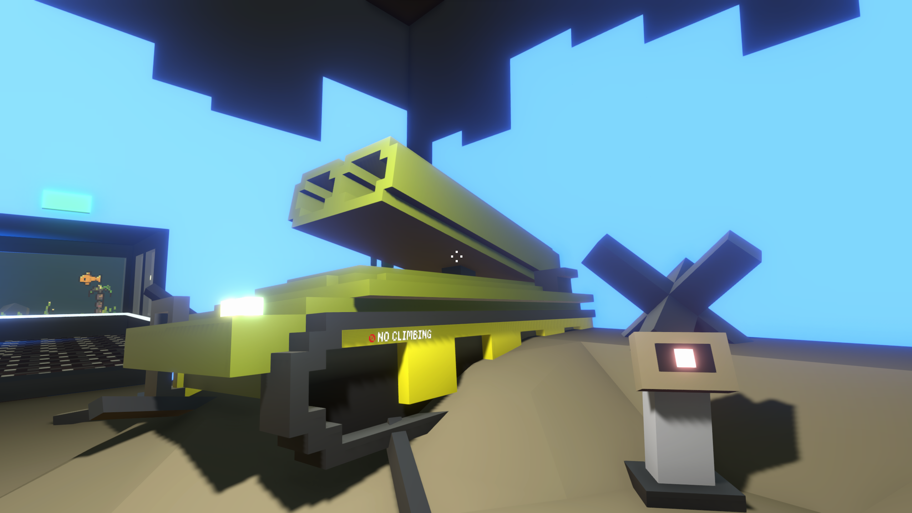
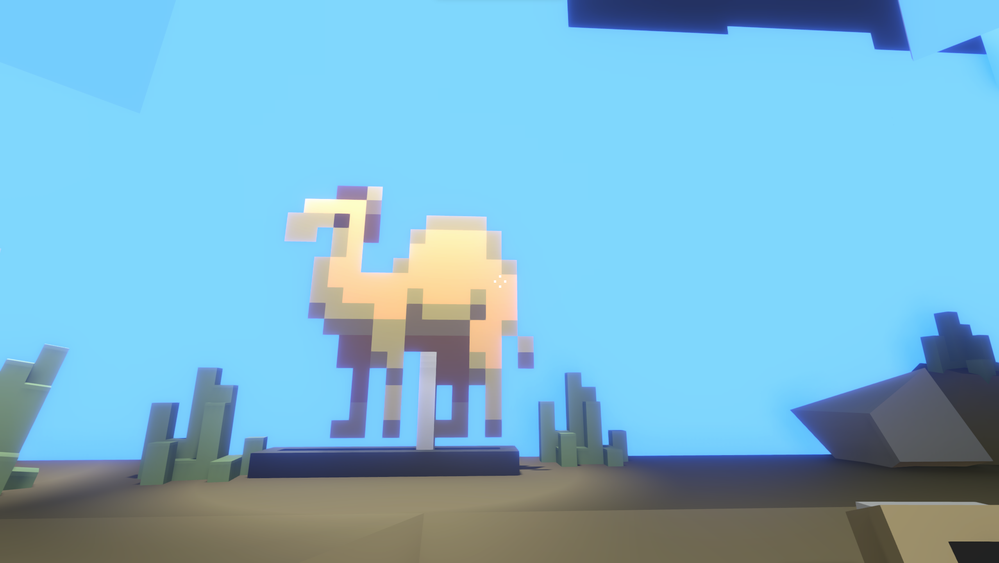

<--Mainhall
World War IV Memorial
exhibits

-Sabertooth XIV Anti-Satellite Vehicle-
New Soviet anti-satellite vehicle produced in 2186. It had excellent performance in the early part of World War IV, and its missiles themselves relied on friendly satellites to provide positional relay.
tips: Toward the end of the war, when the US and HCCCP had little satellites left, some Sabertooths were also assigned anti-tank duties.

-Camel-
A popular livestock in desert countries that can do double duty as a milk producer, meat producer, and transportation tools.
tips: The only camel farm on Nivarus is located in the capital of The Republic of Somistan, and serves as the national treasure of Somistan, one of the few countries that still uses an earth creature as a national symbol.
<--Mainhall
The largest and most detailed museum of Earth history on Nivarus XII